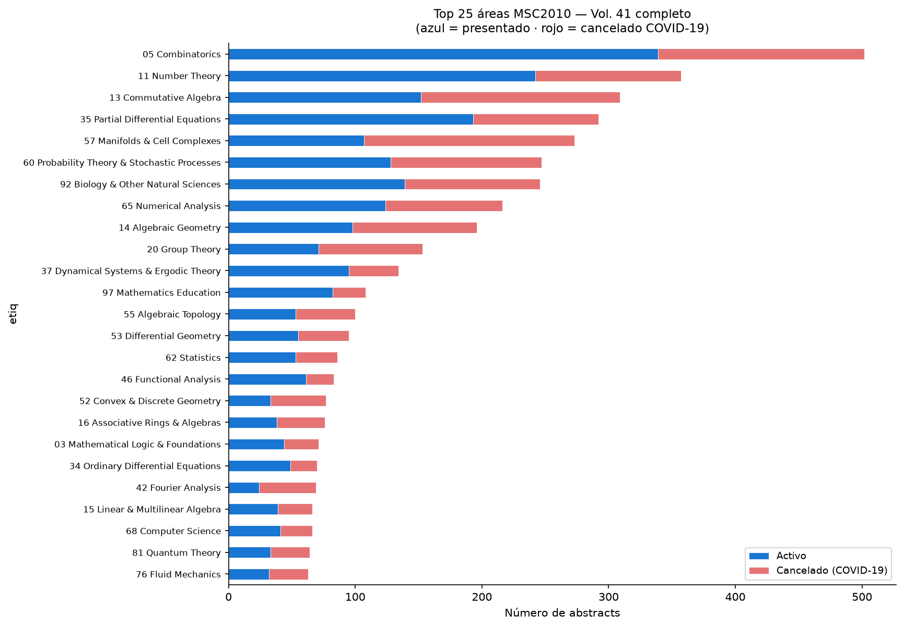
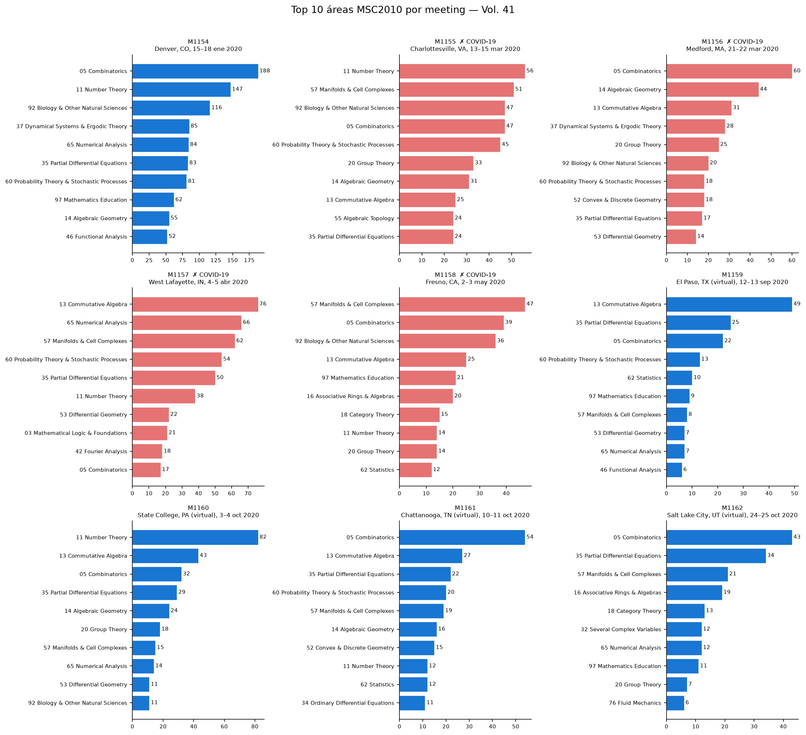
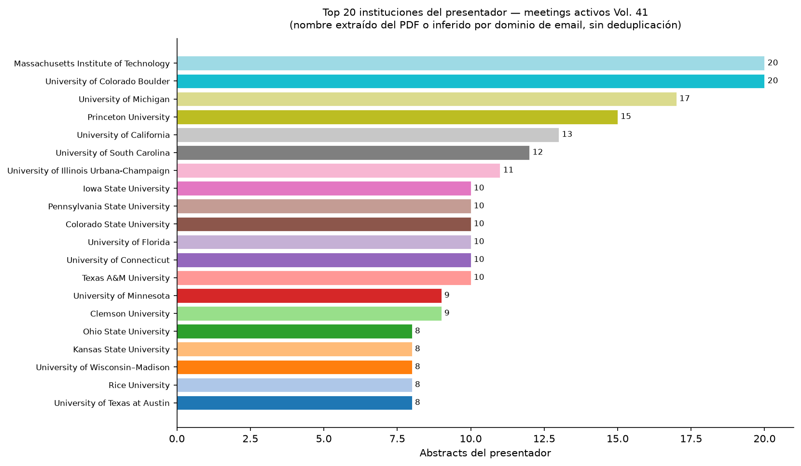
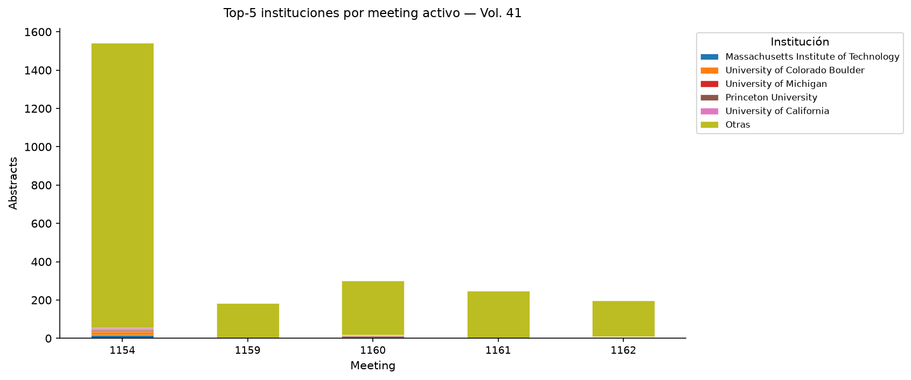
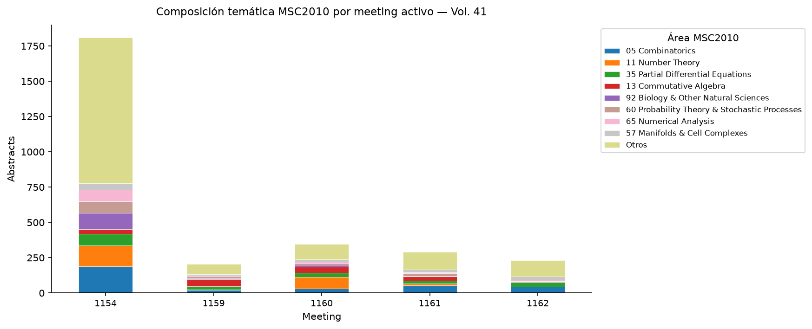
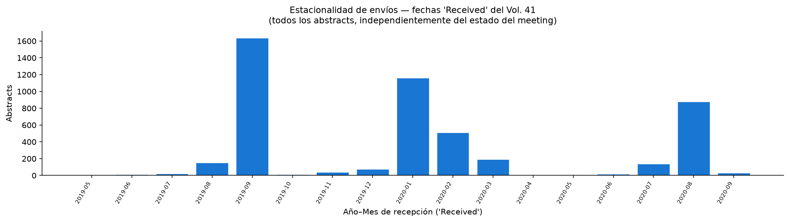
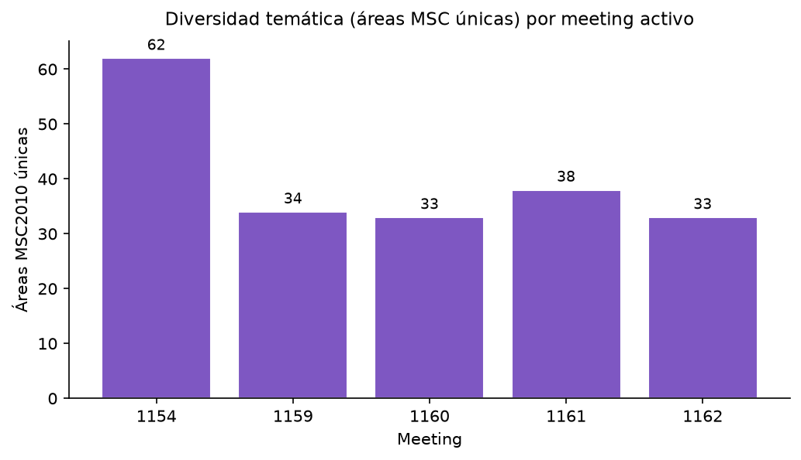
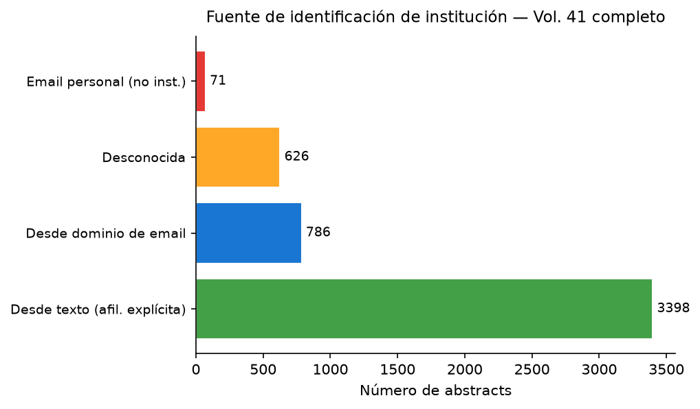

Indicadores
2,880
Abstracts en meetings
presentados
presentados
62
Áreas MSC2010 únicas
(meetings activos)
(meetings activos)
85.7%
Abstracts con institución
identificada (activos)
identificada (activos)
3.4%
Abstracts en Top-5 inst.
(meetings activos)
(meetings activos)
41.0%
Abstracts en meetings
cancelados (COVID-19)
cancelados (COVID-19)
Meetings analizados
| Meeting # | Nombre | Lugar | Fechas | Abstracts | Áreas MSC | Estado |
|---|---|---|---|---|---|---|
| 1154 | Joint Mathematics Meetings | Denver, CO | 15–18 ene 2020 | 1808 | 62 | Presentado |
| 1155 | Spring Eastern Sectional | Charlottesville, VA | 13–15 mar 2020 | 603 | — | Cancelado COVID-19 |
| 1156 | Spring Eastern Sectional | Medford, MA | 21–22 mar 2020 | 407 | — | Cancelado COVID-19 |
| 1157 | Spring Central Sectional | West Lafayette, IN | 4–5 abr 2020 | 629 | — | Cancelado COVID-19 |
| 1158 | Spring Western Sectional | Fresno, CA | 2–3 may 2020 | 362 | — | Cancelado COVID-19 |
| 1159 | Fall Central Virtual Sectional | El Paso, TX (virtual) | 12–13 sep 2020 | 204 | 34 | Presentado |
| 1160 | Fall Eastern Virtual Sectional | State College, PA (virtual) | 3–4 oct 2020 | 345 | 33 | Presentado |
| 1161 | Fall Southeastern Virtual Sectional | Chattanooga, TN (virtual) | 10–11 oct 2020 | 291 | 38 | Presentado |
| 1162 | Fall Western Virtual Sectional | Salt Lake City, UT (virtual) | 24–25 oct 2020 | 232 | 33 | Presentado |
Hallazgos
1Área dominante por tipo de evento. En la JMM Denver (meeting 1154, presencial), el tema más frecuente fue 05 Combinatorics (188 abstracts, 10.4% del meeting). En los cuatro meetings virtuales seccionales post-COVID (1159–1162 agrupados), el área más frecuente fue 05 Combinatorics (151 abstracts, 14.1% de esos meetings).
2Institución más activa. Massachusetts Institute of Technology concentra 20 abstracts de los meetings activos (0.8% del total con institución identificada). El nombre proviene directamente del texto del PDF y no está deduplicado; variantes ortográficas cuentan por separado.
3Estacionalidad de envíos. El pico de envíos al sistema AMS se concentró en 2019 Jul–Dic (1922 abstracts). Esto refleja los plazos de los meetings: las fechas límite de recepción de los números de primavera e invierno del volumen 41 corresponden al segundo semestre de 2019 y al primer trimestre de 2020.
4Diversidad temática: presencial vs. virtual. La JMM Denver cubrió 62 áreas MSC2010 distintas, frente a los meetings virtuales (M1159: 34, M1160: 33, M1161: 38, M1162: 33 áreas respectivamente). La menor diversidad de los meetings seccionales es esperable: tienen un alcance geográfico y temático más acotado.
Gráficos








Limitaciones
- La afiliación extraída corresponde únicamente al presentador (autor marcado con *). La afiliación de los co-autores no se puede separar de forma fiable del texto plano.
- El nombre de institución se obtiene por dos vías: (a) limpiando el texto de la afiliación explícita (69.6% de los casos) y (b) consultando una tabla estática de ~160 dominios académicos (16.1% de los casos). El 14.3% de los abstracts queda sin institución identificada. La misma institución puede aparecer con distintas grafías; no se aplica deduplicación.
- Los meetings 1155–1158 aparecen publicados en el volumen 41 pero no fueron presentados (cancelados por COVID-19). Se incluyen en los conteos globales con bandera cancelado y se excluyen de los indicadores de meetings activos.
pypdfextrae texto plano. LaTeX, caracteres especiales y saltos de página pueden fragmentar nombres o afiliaciones. 9.8% de los abstracts no tienen email del presentador parseable.- 0.4% de los abstracts no tienen fecha “Received” parseable. La fecha de recepción refleja cuándo se envió el abstract al sistema AMS, no la fecha de presentación.
- El volumen 41 cubre exclusivamente el año 2020. Los resultados no son comparables con otros volúmenes sin normalizar por número de meetings.